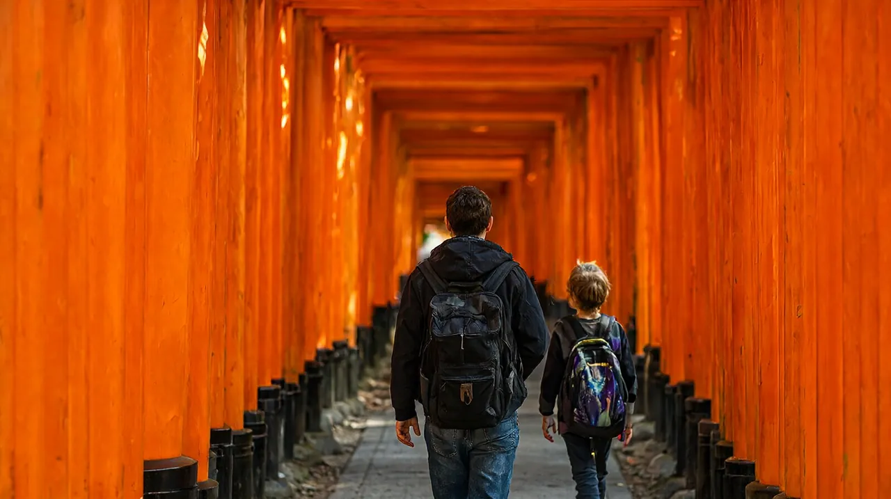

오사카 4박 5일 가족 일정과 교토 당일치기
3박 4일 일정에 교토 하루를 더한 초등 자녀 동반 일정

성인 2명과 초등학생 자녀 1명이 난바에서 4박 하며 하루를 교토에 쓰는 경우를 기준으로 했습니다. 3박 4일 일정의 USJ 하루와 가이유칸 하루를 그대로 두고 교토 하루를 끼웠습니다. 하루 방문지는 2~3곳이고 오후에는 쉬는 시간을 넣었습니다. 확인일은 2026-10-22이며 환율 100엔 = 약 840원(2026-10-21, open.er-api.com)입니다. 원화 환산은 모두 "약"으로 읽어 주세요.
교토냐 나라냐
오사카 허브에서는 근교로 교토와 나라를 같이 소개했습니다. 이 글은 교토를 골랐습니다. 어린이 입장료가 낮은 철도박물관이 있고, 후시미이나리는 무료이며 역 바로 앞이기 때문입니다. 걷는 양이 부담스러우면 난바에서 긴테쓰로 약 35~36분, 680엔인 나라가 더 가깝습니다(explore.osaka, 오사카 허브). 나라 일정은 이 글에서 다루지 않습니다.
일정 한눈에 보기
| 일차 | 방문지 (2~3곳) | 이동 | 예약 필수 | 메모 |
|---|---|---|---|---|
| 1일차 | 난바 숙소 체크인, 도톤보리 산책, 신사이바시스지 상점가 | 간사이공항에서 난바까지 라피트 약 38분 | 없음 (막차 시각만 확인) | 도착일은 피로 고려, 저녁은 일찍 먹고 일찍 쉼 |
| 2일차 | USJ 종일 (슈퍼 닌텐도 월드 등) | 난바에서 니시쿠조 환승, 유니버설시티까지 약 32분, 400엔 | 필수: 방문일을 정한 스튜디오 패스 | 시간 지정 입장권은 당일 앱 방식과 사전 구매 방식이 있음 |
| 3일차 | 교토 철도박물관, 후시미이나리 신사 (교토수족관은 비 오는 날 대안) | 오사카역에서 JR 신쾌속으로 교토역까지 약 30분, 580엔 | 권장: 철도박물관 전자 입장권 | 철도박물관은 수요일 휴관. 수요일이면 3일차와 4일차를 바꿈 |
| 4일차 | 가이유칸, 덴포잔 마켓플레이스, 신세카이 (저녁, 선택) | 오사카 메트로 1일권 | 권장: 가이유칸 전자 입장권 | 가이유칸은 재입장이 안 된다는 안내가 있어 점심은 관람 전후에 |
| 5일차 | 체크아웃, 구로몬 시장 (선택, 짧게) | 난바에서 간사이공항 라피트 약 37~38분 | 없음 | 항공 출발 시각에서 거꾸로 계산 |
1일차 도착일: 가볍게
- 간사이공항 제1터미널에서 난카이선을 타고 난바로 갑니다. 라피트는 전 좌석 지정석이며 일반석 요금은 어른 1,670엔, 어린이 약 840엔입니다(오사카 스테이션). 공항급행은 어른 970엔, 어린이 490엔에 약 45분입니다. 난카이는 2026-04-01에 특급 요금을 올려 라피트 특급 요금이 520엔에서 700엔이 되었습니다(내비타임, 2026-06).
- 저가 항공이 제2터미널에 닿으면 무료 셔틀버스로 7~10분 더 걸립니다(내비타임).
- 늦게 도착하면: 공항 출발 막차는 라피트 밤 10시 20분 무렵, 공항급행 밤 11시 55분 무렵, 리무진 버스 밤 9시 12분 무렵입니다(내비타임, 2026-06). 그 이후에는 택시(1만 6천~2만 엔 안내)가 현실적입니다. 난카이 공식 사이트가 점검 중이라 막차는 확인 필요.
- 숙소에 짐을 맡기거나 체크인한 뒤 도톤보리 강변과 신사이바시스지 상점가를 걷습니다. 입장료가 없는 산책이므로 분위기만 보고 저녁은 일찍 먹습니다.
2일차 USJ 하루
- 이동: 난바(오사카 메트로)에서 니시쿠조까지 가서 JR 유메사키선으로 갈아타고 유니버설시티역에서 내립니다. 약 32분, 400엔이며 역에서 파크까지 걸어서 약 5분입니다(내비타임, 오사카 스테이션).
- 개장 시각은 날짜마다 달라서 방문일의 공식 달력으로 확인해야 합니다. 조회일(2026-10-22) 공식 사이트에는 오전 8시부터 오후 10시로 표시되어 있었습니다(USJ 공식).
- 슈퍼 닌텐도 월드를 중심으로 하되 자녀 키를 먼저 재 보세요. 마리오 카트는 107센티미터 이상(122센티미터 미만은 보호자 동승), 요시 어드벤처는 92센티미터 이상, 플라잉 다이노소어는 132센티미터 이상으로 안내됩니다(japanbooked, 공식 키 제한 페이지 인용).
- 초등학교에 다니는 12세는 어린이 요금이 적용됩니다(japanbooked). 어린이 요금은 3월 31일까지이고 4월 1일부터 어른 요금이라는 안내도 있으니(happyell, 2026-08) 6학년이면 방문 시점을 확인하세요.
- 하루에 다 보겠다는 욕심을 버리고 슈퍼 닌텐도 월드, 다른 구역 한 곳, 저녁 쇼 정도만 잡아도 충분합니다.
3일차 교토 당일치기
오사카에서 교토까지는 철도로 약 43킬로미터이고, 처음 가는 사람에게는 JR 신쾌속이 기본 선택입니다(오사카 관광 안내 사이트).
| 방법 | 소요시간 | 요금 (어른, 편도) | 도착 지점 | 비고 |
|---|---|---|---|---|
| JR 신쾌속 | 오사카역에서 약 30분 | 580엔 | 교토역 | 환승 없음. 보통 열차도 같은 선로를 달리니 신쾌속 표시를 확인 |
| 한큐 특급 | 오사카우메다역에서 약 45분 | 410엔 | 교토가와라마치역(시내 중심) | JR 오사카역과 한큐 오사카우메다역은 서로 다른 건물이며 걸어서 약 3분 |
| 게이한 특급 | 요도야바시역에서 약 48분 | 확인 필요 | 산조 또는 데마치야나기 | 히가시야마 방면에 가까움 |
| 신칸센 | 신오사카에서 출발 | 1,450엔 | 교토역 | 신쾌속보다 약 10분 빠를 뿐이라 패스가 없으면 비추천 |
- 위 표는 오사카 관광 안내 사이트 기준입니다. 난바에서 출발하면 먼저 미도스지선 지하철로 우메다까지 올라가야 하며 그 요금과 시간은 확인 필요입니다.
- 철도박물관과 후시미이나리 모두 교토역에서 가까운 JR 노선에 있어 JR 신쾌속이 가장 편합니다. 한큐와 게이한은 시내 중심 방문에 맞아 이 코스에는 쓰지 않았습니다.
- 어린이 요금은 JR 어른 요금의 반액으로 가정했습니다(확인 필요). 교토 시내 JR 구간 요금도 확인 필요입니다.
아이와 가기 좋은 교토 코스
| 순서 | 장소 | 아이 정보 | 요금 | 출처 |
|---|---|---|---|---|
| 1 | 교토 철도박물관 | 증기기관차 전시, 운전 시뮬레이터(1회 약 10분, 100엔, 사전 구매 필수, 박물관 안에서는 판매하지 않음) | 어른 1,500엔, 초등·중학생 500엔, 3세 이상 유아 200엔 | 교토 철도박물관 공식 |
| 2 | 후시미이나리 신사 | JR 이나리역이 정문 맞은편. 붉은 도리이 길을 아이와 걷기 좋음. 정상까지 가지 않아도 천 개의 도리이 구간만 보고 돌아올 수 있음 | 무료 | 후시미이나리 공식 안내, 교토 관광 안내 |
| 3 (대안) | 교토수족관 | 담수 생물 중심, 관람 약 2시간(민간 안내) | 어른(대학생 포함) 2,600엔, 고교생 2,000엔, 초·중학생 1,400엔, 유아(3세부터) 900엔(2026-02-10 개정 요금, 교토수족관 공식) | 교토수족관 공식 |
철도박물관은 10시부터 17시까지 열고 16시 30분 이후에는 입장할 수 없으며, 매주 수요일과 12월 30일~1월 1일에 쉽니다(철도박물관 공식, 봄방학과 여름방학 등은 개관). 후시미이나리는 경내에 폐문 시각이 없어 24시간 참배할 수 있고 휴일이 없으며, 기도 접수와 대응은 8시 30분~16시 30분, 수여소는 8시~18시입니다(교토 관광 협회 공식 안내 교토관광Navi). 다른 안내에 적혀 있던 일반 참배 9시~17시 표기는 공식 안내와 달라 정정합니다.
하루 흐름 (예시, 정확한 시각은 열차 시간표로 확인)
- 08:30 난바에서 출발해 JR 오사카역으로 이동 (소요 시간 확인 필요)
- 09:00쯤 JR 신쾌속 탑승, 교토역 도착은 약 30분 뒤
- 교토역에서 JR 사가노선으로 한 정거장 가면 우메코지교토니시역이고 철도박물관이 가깝습니다. 민간 안내는 이 구간을 약 3분이라고 하지만 공식 확인은 필요합니다(japanforkids 비공식).
- 10:00 개관 직후 입장, 박물관 안 식당에서 점심. 인기 도시락은 오후에 매진될 수 있다는 민간 안내가 있어 일찍 사 두는 방법이 있습니다.
- 14:00 교토역으로 돌아와 JR 나라선으로 이나리역에 갑니다. 교토역에서 약 5분입니다(오사카 관광 안내 사이트). 아이와는 천 개의 도리이 구간까지만 가고 1~2시간 안에 마칩니다. 정상 일주는 2~3시간이 걸린다는 민간 안내가 있어 권하지 않습니다.
- 17시 전에 교토역에서 JR 신쾌속으로 오사카로 돌아옵니다. 저녁 열차는 붐비니 앉지 못할 수 있습니다.
- 팁: 이나리 신사는 오전 9시 전이나 오후 4시 이후가 한산하다는 안내가 있습니다(오사카 관광 안내 사이트).
- 팁: 단풍철인 11월에는 교토 전체가 붐벼 대기 시간이 늘 수 있으니 오전 일찍 움직이세요.
4일차 가이유칸과 덴포잔
- 이동: 오사카 메트로 주오선 오사카코역 1번 출구에서 걸어서 약 5분입니다(시티레일스). 난바에서 오사카코역까지의 환승과 소요 시간은 확인 필요.
- 가이유칸은 날짜별 변동 요금제입니다(가이유칸 공식). 2026-10-03~11-30 달력 기준으로 어른 2,800~3,500엔, 초등·중학생 1,400~1,800엔, 유아(3세부터) 700~900엔으로 정리된 곳이 있습니다(osakaaquarium.org, lunitravels 민간 안내). 방문일의 정확한 금액은 공식 요금 달력에서 확인 필요.
- 입장 시각은 15분 단위로 정하는 전자 입장권이 권장됩니다(lunitravels). 재입장이 안 되므로(가이유칸 공식 FAQ) 점심은 관람 전이나 후에 덴포잔 마켓플레이스에서 먹습니다. 관람은 약 2시간입니다. 입장권을 보여 주면 마켓플레이스에서 쓸 수 있는 쿠폰이 나옵니다(가이유칸 공식).
- 저녁에 힘이 남으면 신세카이를 걷습니다. 사카이스지선 에비스초역 3번 출구에서 걸어서 약 3분입니다(시티레일스).
5일차 귀국일
- 시간이 있으면 구로몬 시장을 잠깐 봅니다. 닛폰바시역 10번 출구 옆이고 지붕 있는 시장 거리는 약 580미터입니다(시티레일스). 영업 시간은 확인 필요. 항공 시각이 이르면 건너뜁니다.
오후 휴식 지점
| 일차 | 휴식 방법 | 메모 |
|---|---|---|
| 1일차 | 체크인 후 바로 쉬기 | 저녁 산책 전에 1시간 눕기 |
| 2일차 | 점심 뒤 파크 안에서 속도 줄이기 (쇼, 실내 시설 위주) | 파크 밖으로 나가 쉬는 경우 같은 날 재입장은 안 됩니다(USJ 웹 티켓 스토어 공식) |
| 3일차 | 철도박물관 점심 뒤 박물관 안에서 쉬고, 이나리는 가볍게 | USJ 다음 날이라 체력을 보고 이나리 구간을 줄임 |
| 4일차 | 가이유칸과 점심을 마치고 오후 2시 30분 무렵 숙소로 복귀, 5시까지 휴식 | 신세카이는 쉰 뒤 선택 |
| 5일차 | 공항 이동 중 열차 안에서 휴식 | 라피트는 전 좌석 지정석 |
비 오는 날 대안
- 2일차 USJ가 가장 불리합니다. 2026-09-01 이후 방문분 일부 티켓은 방문일 변경이 가능하다고 안내됩니다(USJ 공식 인가 판매처). 4박 5일이라 가이유칸 날과 서로 바꿀 여유가 있습니다.
- 3일차 교토가 비이면 후시미이나리 대신 교토수족관을 넣어 실내로 채웁니다. 철도박물관과 수족관은 같은 공원 옆이라 가깝다는 민간 안내가 있으며, 둘 다 보면 서두르게 되니 하나를 크게 보세요(japanforkids 비공식).
- 4일차 가이유칸은 실내라 비에 강합니다.
예약이 필요한 시설
| 시설 | 예약 수준 | 내용 | 출처 |
|---|---|---|---|
| USJ 스튜디오 패스 | 필수 | 2026-09-01 이후 방문분은 구매할 때 방문일을 지정. 1일권은 어른 8,400엔부터, 어린이 5,500엔부터이며 날짜에 따라 달라짐 | USJ 공식, 공식 인가 판매처, japanbooked |
| 슈퍼 닌텐도 월드 시간 지정 입장권 | 상황에 따라 필요 | 사전 구매형 시간 지정권 또는 당일 앱에서 받는 시간 지정권이나 대기 입장권이 필요할 수 있음. 당일 배포가 일찍 끝날 수 있어 공식 앱을 미리 설치 | USJ 공식 |
| 익스프레스 패스 | 선택 | 입장권과 별도 구매. 공식 최저가는 4개 지정형 6,800엔부터, 5개 12,200엔부터, 7개 14,100엔부터, 8개 15,500엔부터이며 방문일마다 달라짐(USJ 공식) | USJ 공식, japanbooked |
| 가이유칸 | 권장 | 당일권도 판매하지만 희망 시각에 못 들어갈 수 있어 전자 입장권으로 시각을 정해 두는 것이 안전 | 가이유칸 공식 |
| 교토 철도박물관 | 권장 | 전자 입장권 판매. 운전 시뮬레이터는 사전 구매 필수이며 전자 티켓만 판매하고 시작 시각 변경은 당일 10시 20분까지 | 교토 철도박물관 공식 |
총비용 예시
성인 2명과 초등 자녀 1명 기준입니다. 환율 100엔 = 약 840원(2026-10-21, open.er-api.com). 3박 4일 글의 숫자에 교토 구간을 더했습니다.
| 항목 | 금액 | 기준 |
|---|---|---|
| 항공 | 1인 왕복 약 20만~50만원 (3인 약 60만~150만원) | 인천에서 간사이 직항 왕복. 조회된 최저 표시가 약 19만원(트래블로카), 평균 약 49만원(부킹닷컴)이며 날짜와 수하물에 따라 크게 달라지므로 범위만 적음. 날짜를 정한 뒤 같은 조건의 총액으로 비교 |
| 숙박 | 확인 필요 | 날짜와 숙소별로 확인. 오사카부 숙박세는 1인 1박 객실 요금 5,000엔 미만 면제, 5,000엔 이상 15,000엔 미만 200엔, 15,000엔 이상 20,000엔 미만 400엔, 20,000엔 이상 500엔(호텔 공지). 6세 미만이 어른과 한 침대를 쓰면 면제. 4박이므로 3박 4일보다 한 박 많음 |
| 식비 | 확인 필요 | 가족 식비는 직접 확인한 근거가 없어 숫자를 적지 않음 |
| 교통 | 합계 15,210엔 (약 127,800원) | 3박 4일 교통 12,310엔(공항 왕복 라피트 8,360엔, USJ 왕복 2,000엔, 메트로 1일권 1,950엔)에 교토 JR 신쾌속 왕복 2,900엔(3인 편도 1,450엔: 어른 580엔 곱하기 2, 어린이 반액 290엔 가정)을 더함. 난바에서 우메다까지 지하철, 교토 시내 JR 구간 요금은 확인 필요라서 제외 |
| 입장료 | 합계 32,800~34,600엔 (약 275,500~290,600원) | 3박 4일 입장료 29,300~31,100엔에 교토 철도박물관 3,500엔(어른 1,500엔 곱하기 2, 초등 500엔)을 더함. 후시미이나리는 무료. 수족관을 넣으면 6,600엔(교토수족관 공식 요금: 어른 2,600엔 곱하기 2, 초등 1,400엔) 추가 |
| 1인 환산 | 약 33만~64만원 | 항공 20만~50만원에 교통과 입장료 1인 약 134,000~139,000원을 더한 값(3인 합계 약 403,000~418,000원). 숙박, 식비, 기념품 제외 |
오사카 어매이징 패스 1일권은 3,500엔이고 어른과 어린이 가격이 같습니다(공식, 2026/27). 가이유칸에는 쓸 수 없다는 민간 안내가 있어 이 일정에는 넣지 않았습니다.
귀국 동선
- 전날 밤에 짐을 싸고 면세 물건은 따로 모아 둡니다.
- 항공 출발 시각에서 거꾸로 계산합니다: 출발 시각, 항공사의 체크인 마감과 권장 도착 시각(대한항공과 제주항공은 국제선 출발 60분 전에 마감, 제주항공은 여유 있게 2시간 전 도착을 권장함. 다른 항공사는 확인 필요), 난바에서 공항까지 열차 약 37~38분, 난바역 안 이동 여유 20~30분.
- 난바에서 공항으로 가는 라피트는 낮 시간대에 매시 5분과 35분 무렵에 출발하는 편이고 공항급행은 약 43~45분입니다(내비타임 시각표, 2026-10-20 조회). 짐이 많으면 오사카 시티 에어터미널에서 공항 리무진 버스(어른 1,400엔, 어린이 700엔, 약 48분)를 쓸 수 있고 첫차 6시 10분, 막차 22시 40분 무렵입니다(내비타임, 2026-06). 난바 출발 막차 시각은 확인 필요.
- 면세: 2026-10-31까지는 계산대에서 세금을 뺀 현재 방식이고, 2026-11-01 이후 구매분은 세금 포함 가격으로 사고 출국할 때 세관 확인을 받은 뒤 환급받습니다. 1개 점포에서 하루 5,000엔 이상(세금 제외) 구매가 대상이며 90일 안에 세관 확인을 받아야 합니다. 간사이공항에는 환급 단말기가 있고 Visit Japan Web으로 온라인 처리도 가능합니다(일본 세관). 세관 확인 소요 시간은 확인 필요이므로 쇼핑이 많으면 일찍 도착하세요. 절차는 tax-free-2026-11 글을 참고하세요.
- 다음 단계: 출국 전 점검은 departure-checklist 글로 이어집니다.
확인 필요 항목
- 난카이 공식 요금과 시각표, 난바 출발 막차 (공식 사이트가 점검 중이라 민간 안내로 대체) (2026-10-22 재시도에서도 일본어·영어 공식 페이지와 시각표 PDF가 모두 점검 응답 503이라 확인 못함. 검색에 남은 공식 특급 안내(2022-06 게시)에는 레귤러 특급권 700엔(어린이 350엔), 티켓리스 150엔 할인이 있으나 현행 여부는 미확인)
- 난바에서 JR 오사카역까지의 이동 방법과 요금, 게이한 특급 요금, 교토 시내 JR 구간 요금
- 교토수족관의 운영 시간 (요금은 공식 안내로 확인함. 운영 시간은 공식 페이지에서 조회하지 못함)
- 철도박물관과 이나리 신사 구간의 정확한 이동 시간과 요금
- USJ 어린이 요금의 방문일별 금액과 상한, 방문일별 개장 시각 (공식 표시는 어른 8,400엔부터, 어린이 5,500엔부터이며 상한 표기는 없음)
- 가이유칸 방문일별 정확한 요금 (공식 요금 달력이 스크립트로 표시되어 조회 못함. 재입장 불가는 공식 FAQ로 확인)
- 구로몬 시장 영업 시간, 대한항공·제주항공 외 항공사의 체크인 마감 시각, 면세 세관 확인 소요 시간
- 가정치: JR 어린이 요금과 USJ 왕복 어린이 교통비를 어른의 반액으로 계산
공식 출처
오사카 관광 안내 사이트(오사카에서 교토 가는 법), 교토 철도박물관 공식, 후시미이나리 신사 공식 접근 안내, 교토 관광 안내(discoverkyoto), 난카이 철도 안내(오사카 스테이션, 내비타임 일본 여행: 비공식 민간 안내), USJ 공식 사이트와 공식 인가 판매처, japanbooked, happyell, 가이유칸 공식 사이트, osakaaquarium.org, lunitravels, japanforkids(비공식), 오사카 메트로 공식, 시티레일스, 일본 세관, 호텔 숙박세 공지, 트래블로카, 부킹닷컴. 세부 주소는 앞머리 sources 참조.